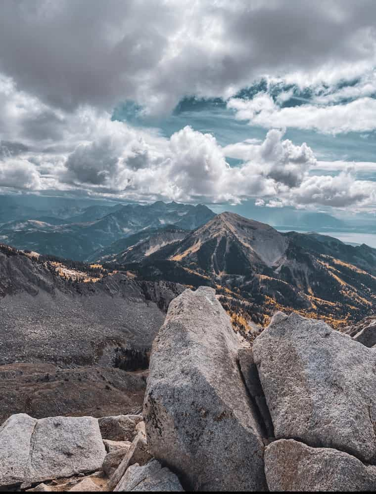
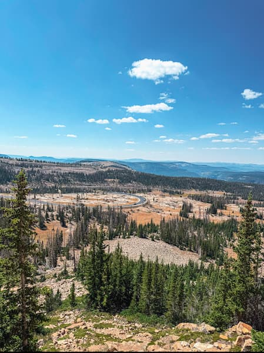
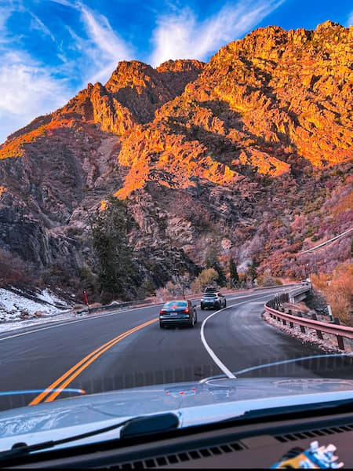

Trip 2023
Whitewater rafting is an exhilarating outdoor activity that combines the raw power of nature with the necessity of synchronized teamwork. Participants navigate inflatable rafts through turbulent river currents, maneuvering around obstacles like rocks and "holes" where the water recirculates. The experience is categorized by a grading system, ranging from Class I (calm, slow-moving water) to Class VI (extreme, life-threatening rapids). This progression allows beginners to enjoy scenic floats while seasoned thrill-seekers can challenge themselves against massive hydraulic forces
Trip 2024
Beyond the physical intensity, rafting offers a unique perspective on the natural world, often leading explorers through deep canyons and remote wilderness areas inaccessible by land. Guided trips are the most common way to experience the sport, as professional guides provide essential safety instructions and technical steering maneuvers. Between the heart-pounding moments of "dropping" into a rapid, there are often peaceful stretches of flat water that allow for wildlife viewing and appreciation of the surrounding geological formations.


Trip 2025
Success on the river depends entirely on communication and collective effort. Every paddler must follow the guide’s commands in unison—paddling forward, back, or digging deep—to keep the raft on its intended line and prevent it from flipping. This shared challenge creates a strong sense of camaraderie among participants, making it a popular choice for group bonding. Whether you are looking for a cooling summer adventure or a high-adrenaline test of skill, whitewater rafting provides an unforgettable blend of athleticism and natural beauty.
Available trips
| Trip | Duration | Price | Physical Level |
|---|---|---|---|
| Provo Canyon River | 2 hrs | $50 | Advance |
| Logan Canyon River | 2.5 hrs | $55 | Pro |
| Little Cottonwood Canyon | 1 hr | $30 | Bigginer |
| Nebo Canyon | 1.5 hr | $40 | Intermidiate |
| Park City River | 2 hrs | $50 | Advance |